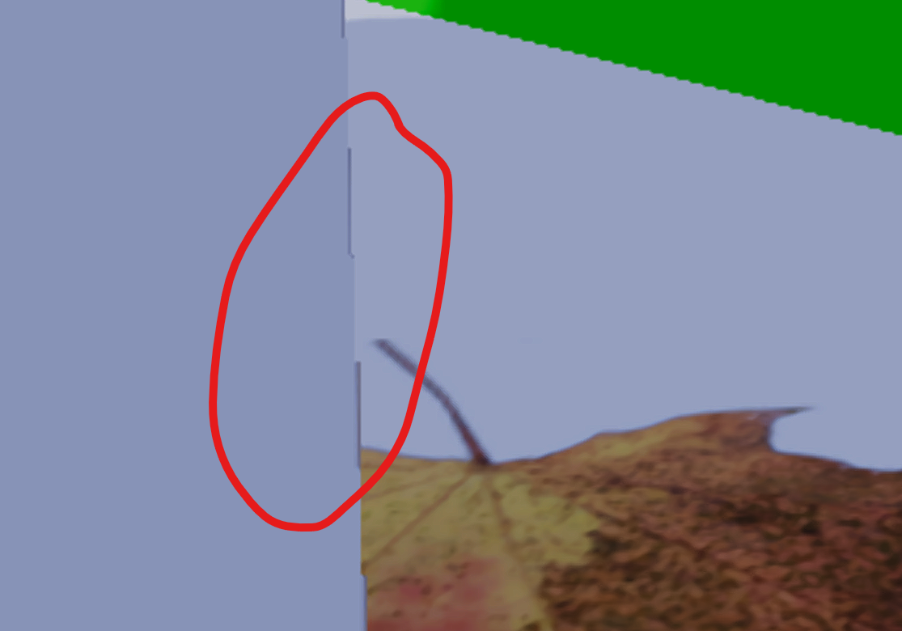

Derivatives in compute shader
This post shows a way to compute derivatives for texture filtering in compute shaders (for visibility buffer shading). I was missing a step-by-step explanation of how to do this, but after some trial and error, the following method turned out to work well.
Background
In compute shaders you don’t get access to the ddx() and ddy() instructions that are necessary to call the texture.Sample() function (this became available in SM 6.6 recently, but I am not using that here). The simplest way is to use texture.SampleLevel(), where you must specify the mip level manually – this can be used for texture filtering with the “ray cones” technique for example. The ray cones technique unfortunately is not capable of anisotropic texture filtering, so it is not on par with what you get with rasterization and pixel shaders (Correction: the ray cones technique was also extended with anisotropic support in this paper, thanks to Stephen Hill for pointing it out in the comments!). The texture.SampleGrad() function can also be used, but it requires you to manually compute the ddx(uv) and ddy(uv) and provide them as the last parameters. The SampleGrad() can handle the anisotropic texture sampler, so this is the best solution to use where possible.
To read more about how the pixel shader generates the dxx() and ddy() derivatives, this blog explains it perfectly: Visibility Buffer Rendering with Material Graphs. It also demonstrates code for a way to compute the derivatives manually, but that solution didn’t fit that well into my renderer, because it uses vertex positions that are projected to the screen. In my case, the visibility buffer lookup code is using a common path with ray tracing, where vertices are kept in world space, and I wanted to keep changes minimal.
First try
I wasn’t very confident with my understanding of the derivatives at this point, but I understood that the nearby pixels share some information among themselves. I thought I would just try sharing an attribute like UVs (texture coordinates) for nearby pixels – there are multiple ways to do it:
- You could have UVs written out on a screen sized texture, so you could easily load the nearby values for a pixel. I didn’t use this.
- You could preload them to LDS (groupshared memory) in a block (2D array) formation for example, so you could look up the nearby values.
- You could use wave intrinsics (Shader model 6.0+), to broadcast from nearby lanes. The QuadReadAcrossX() and QuadReadAcrossY() are exactly for this purpose, but you can only use them if your lanes are guaranteed to be running in a formation so that 4 nearby lanes are forming 2×2 blocks. Earlier I saw this little helper function from the GPUOpen denoiser library that did this, called FFX_DNSR_Shadows_RemapLane8x8. This function should be faster than computing this with the division and modulo operators. I’ll paste my ripped version below in case the link gets lost to time:
// Source: https://github.com/GPUOpen-Effects/FidelityFX-Denoiser/blob/master/ffx-shadows-dnsr/ffx_denoiser_shadows_util.h
// LANE TO 8x8 MAPPING
// ===================
// 00 01 08 09 10 11 18 19
// 02 03 0a 0b 12 13 1a 1b
// 04 05 0c 0d 14 15 1c 1d
// 06 07 0e 0f 16 17 1e 1f
// 20 21 28 29 30 31 38 39
// 22 23 2a 2b 32 33 3a 3b
// 24 25 2c 2d 34 35 3c 3d
// 26 27 2e 2f 36 37 3e 3f
uint bitfield_extract(uint src, uint off, uint bits) { uint mask = (1u << bits) - 1; return (src >> off) & mask; } // ABfe
uint bitfield_insert(uint src, uint ins, uint bits) { uint mask = (1u << bits) - 1; return (ins & mask) | (src & (~mask)); } // ABfiM
uint2 remap_lane_8x8(uint lane) {
return uint2(bitfield_insert(bitfield_extract(lane, 2u, 3u), lane, 1u)
, bitfield_insert(bitfield_extract(lane, 3u, 3u)
, bitfield_extract(lane, 1u, 2u), 2u));
}So now instead of computing pixel coordinate from the dispatch thread ID, you will use the group thread index and this function at the beginning of the compute shader:
[numthreads(8, 8, 1)]
void main(uint groupIndex : SV_GroupIndex, uint3 Gid : SV_GroupID)
{
uint2 GTid = remap_lane_8x8(groupIndex);
uint2 pixel = Gid.xy * 8 + GTid;From this point, you can use the quad-based intrinsics to broadcast attributes:
float2 uv = the mesh uv at current pixel...
float2 uv_quad_x = QuadReadAcrossX(uv);
float2 uv_quad_y = QuadReadAcrossY(uv);Now that you have neighbor values for an attribute, you can compute derivatives and use them for texture sampling with explicit gradients:
float2 uv_dx = uv - uv_quad_x;
float2 uv_dy = uv - uv_quad_y;
float4 color = texture.SampleGrad(sampler_linear_clamp, uv, uv_dx, uv_dy);This works as long as all lanes within the quad are from the same triangle, but on geometric edges and depth discontinuities, you will get artifacts, because the derivatives will not make sense with discontinuity:

Fixing the error
Fortunately, this can be fixed with visibility buffer rendering. The visibility buffer computes the texture coordinates of the surface by ray tracing the triangle of the pixel, computing barycentrics and doing barycentric interpolation of the attribute from the triangle corners. This allows us to compute the neighbor barycentrics and use them to compute gradients. The next piece of code is not a good solution yet, but will get there shortly:
float2 bary = trace_triangle(p0, p1, p2, rayOrigin, rayDirection);
float2 bary_quad_x = QuadReadAcrossX(bary);
float2 bary_quad_y = QuadReadAcrossY(bary);After we have the neighbor barycentrics, compute the neighboring UVs from those and compute gradients:
// computation can be also written as: p0 * (1 - u - v) + p1 * u + p2 * v
inline float2 attribute_at_bary(in float2 a0, in float2 a1, in float2 a2, in float2 bary)
{
return mad(a0, 1 - bary.x - bary.y, mad(a1, bary.x, a2 * bary.y));
}
float2 uv0 = uv_at_triangle_corner(0);
float2 uv1 = uv_at_triangle_corner(1);
float2 uv2 = uv_at_triangle_corner(2);
float2 uv = attribute_at_bary(uv0, uv1, uv2, bary);
float2 uv_quad_x = attribute_at_bary(uv0, uv1, uv2, bary_quad_x);
float2 uv_quad_y = attribute_at_bary(uv0, uv1, uv2, bary_quad_y);
float2 uv_dx = uv - uv_quad_x ;
float2 uv_dy = uv - uv_quad_y;Maybe you see the problem with this already. At first I thought I could broadcast the neighbor barycentrics, but that has the same problem as broadcasting the uvs – if the neighbors are from different triangles, we get discontinuity in the barycentrics – and that will propagate down to the rest of the interpolated attributes. To fix this, instead you can broadcast the ray directions from neighbor pixels, and use those to compute the neighbor barycentrics. The good barycentric neighbors:
float2 bary = trace_triangle(p0, p1, p2, rayOrigin, rayDirection);
float2 bary_quad_x = trace_triangle(p0, p1, p2, rayOrigin, QuadReadAcrossX(rayDirection));
float2 bary_quad_y = trace_triangle(p0, p1, p2, rayOrigin, QuadReadAcrossY(rayDirection));This works, because the ray directions from nearby pixels will be continuous – they are always forming a regular perspective projection grid. An important note is that with real ray tracing, nearby pixels would trace different triangles potentially, but in this case this is not true: we don’t get the triangle index by ray tracing, but from the visibility buffer. Even when nearby ray directions would hit a different triangle, they will be evaluated at the center ray’s triangle, but the barycentrics handle this case well.
After this, the UV derivative code doesn’t need to change, and the barycentric neighbors can be easily used to compute derivatives for other attributes as well.
One problem I ran into is that visibility buffer shading is using binning to sort pixels into material buckets (to handle material type permutations). After binning, currently the pixels are not guaranteed to remain in block layout. In this case, the QuadReadAcross functions can not be used to broadcast ray directions. To solve this, I can compute neighbor ray directions instead of broadcasting:
inline RayDesc CreateCameraRay(float2 clipspace)
{
float4 unprojected = mul(GetCamera().inverse_view_projection, float4(clipspace, 0, 1));
unprojected.xyz /= unprojected.w;
RayDesc ray;
ray.Origin = GetCamera().position;
ray.Direction = normalize(unprojected.xyz - ray.Origin);
ray.TMin = 0.001;
ray.TMax = FLT_MAX;
return ray;
}
inline float2 uv_to_clipspace(in float2 uv)
{
float2 clipspace = uv * 2 - 1;
clipspace.y *= -1;
return clipspace;
}
RayDesc ray = CreateCameraRay(uv_to_clipspace(((float2)pixel + 0.5) * GetCamera().internal_resolution_rcp));
float3 rayDirection_quad_x = CreateCameraRay(uv_to_clipspace(((float2)pixel + float2(1, 0) + 0.5) * GetCamera().internal_resolution_rcp)).Direction;
float3 rayDirection_quad_y = CreateCameraRay(uv_to_clipspace(((float2)pixel + float2(0, 1) + 0.5) * GetCamera().internal_resolution_rcp)).Direction;An other solution could be to bin pixel tiles instead of individual pixels, so the quad formation would remain. That helps performance of the binning, but it could cause inefficiency when one tile is binned for multiple materials – especially in screen regions with high material variety. Binning tiles can also be beneficial while looking up data for lighting – if we know the tile size, we can utilize more coherent memory loads (this can help reduce vector register pressure by utilizing more scalar registers).
I mentioned that I would like to keep this code common to rasterized visibility buffer shading and raytraced shading. The fact that triangle position lookup remained the same without needing extra projection transform on them helps with this. However, this quad based derivatives method is not usable for ray tracing, where rays will not be forming quads in screen space. So I chose to use the #ifdef macro at texture sampling code to use the ray cones mip mapping technique for raytracing and quad based barycentrics for rasterized result (it could also be used on raytracing’s primary ray hit).
Doing this exercise finally helped me to get more comfortable with using pixel derivatives, so it was very much worth it. I am currently working on getting the visbuffer rendering in Wicked Engine to outperform the forward rendering. With regular content that is not stressing triangle counts and sizes, this is not the case yet.
Also check out:
- Filmic Worlds blog by John Hable – all the posts about visibility buffer are must read
- The Forge renderer by ConfettiFX – especially their visibility buffer sampling shader and presentation
- The recent tweet from TooMuchVoltage Software discusses a method for visibility buffer gradients